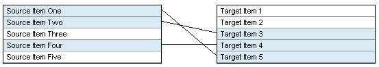

Title: Draw connecting lines between items on a web page (Mozilla/IE) Author: James Love Email: solanapraxis@hotmail.com Member ID: 6508647 Language: JavaScript/HTML Platform: Windows, Internet Explorer 6+ / FireFox 2+ Technology: JavaScript/DHTML Level: Beginner Description: Working GUI allows user to "connect" items shown on a web application. Lines are drawn showing connections. A routine is offered that could save the connections in a database. Section Web Development SubSection Client Side Scripting License:

This simple HTML page displays two columns of items, representing items in two tables in a database. The interface allows the user to "connect" these items in a 1-to-1 format by clicking them. A line is drawn between connected items, giving the user a graphic representation of their connections. Connections can also be removed by the user clicking a connected item again.
This is an extension of a line-drawing method described by Doga Arinir in his article: http://www.codeproject.com/KB/scripting/javascriptlinedrawing.aspx
Everything is in a single HTML file (except the server-side save function, not included). When the user clicks an item in either table, the item is prepared to be connected. If the user then clicks an unconnected item from the other table, a connection is made. A line is drawn to show the connection. The connections are made by the following two functions.
function setSource(oSrc) {
//if another source was clicked first, unhilite it
if (oSource != null) {
if (oSource.className == "treeItem_hi") {
oSource.className = "treeItem";
}
oSource = null;
}
//if this source is already set, clear its line and its target
if (oSrc.className == "treeItem_set") {
//this source was already set; clear
clearElementSetting(oSrc.id);
}
oSrc.className = "treeItem_hi";
oSource = oSrc;
if (oTarget != null) {
drawLine(); //line is drawn from current Source to current Target
oSource = null;
oTarget = null;
}
}
function setTarget(oTar) {
if (oTarget != null) {
if (oTarget.className == "treeItem_hi") {
oTarget.className = "treeItem";
}
oTarget = null;
}
if (oTar.className == "treeItem_set") {
//this target already has a source; clear
clearElementSetting(oTar.id);
}
oTar.className = "treeItem_hi";
oTarget = oTar;
if (oSource != null) {
drawLine(); //line is drawn from current Source to current Target
oSource = null;
oTarget = null;
}
}
When an item is clicked, it clears any previously clicked (but not connected) item in its table. Any existing connections to the clicked item are removed. Then if an item was already clicked in the other table, it connects them. By design, if a connection is made to an item that is already connected, the new connection overrides the old one.
In the HTML, onClick event handlers for the source and target items call the functions respectively:
Source Item One
Target Item 1
The only "tricky" part of this project was getting connector lines to disappear when their source or target items
were clicked again. Since this model is a 1-to-1 data relationship, multiple connections to a single item are not
allowed. (You could allow multiple connections with a little more work on the "Package Up" routine). To accomplish
this, I've added two custom attributes to each "line segment" DIV: mySrc and myTar. When
an element on the page is clicked, the code checks to see if it was already connected (by checking its current
style definition). If it was, the "canvas" where all the lines are contained is searched for the line that
connected that item. The line is then removed from the document.
Once the user has finished connecting the items they want connected, they click the "Package Up" button. The
function called simply counts all the unique lines (by checking their mySrc attributes), and calls a
save routine.
I have not yet addressed pre-populating the page with the connections currently stored in the database. This would be necessary if this tool was used to edit existing cross-reference connections between items.